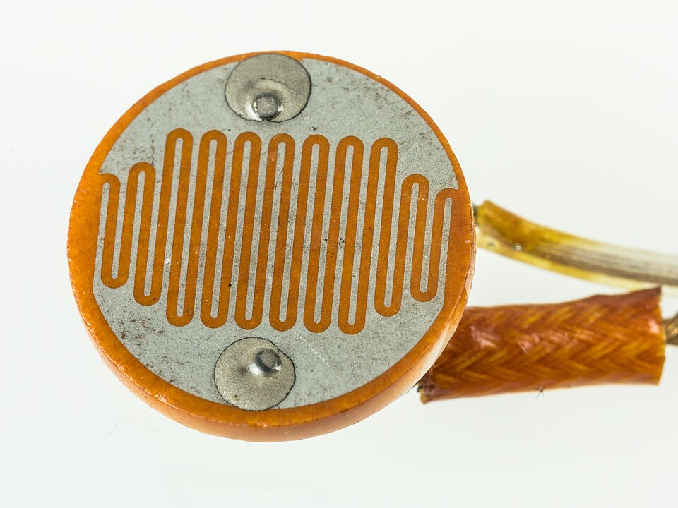
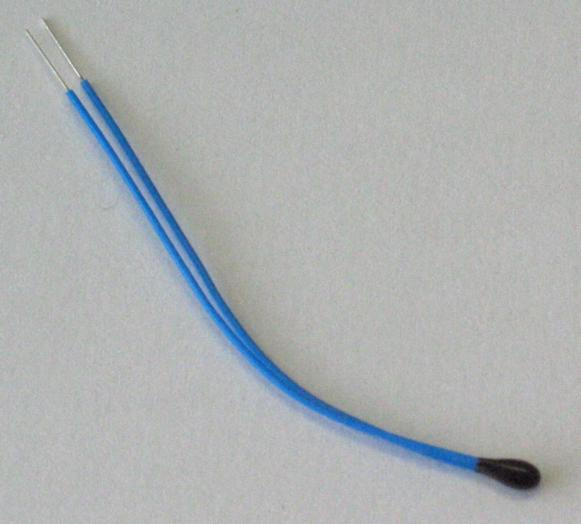
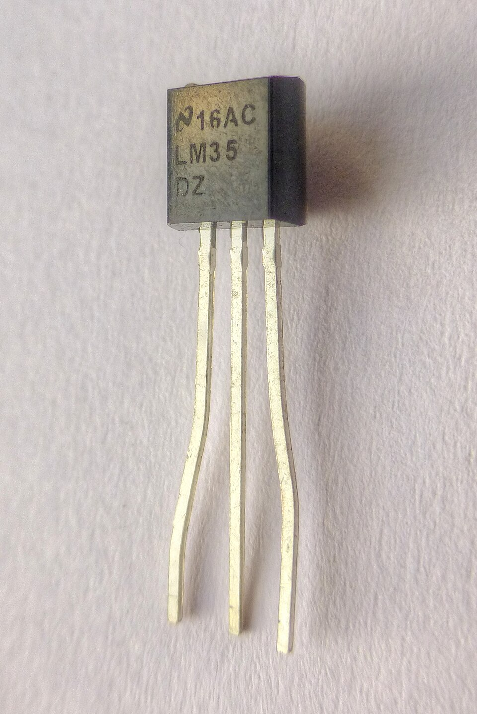
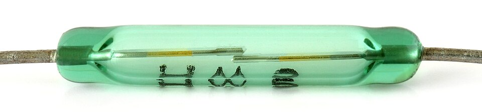
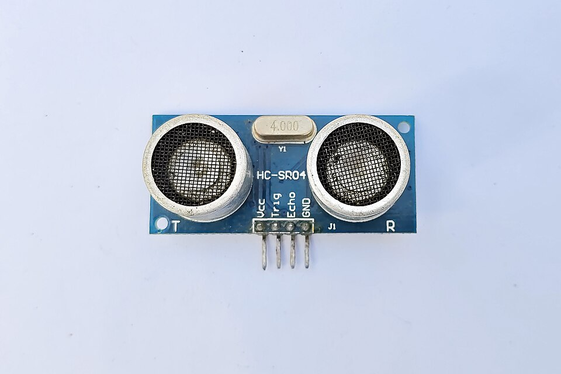
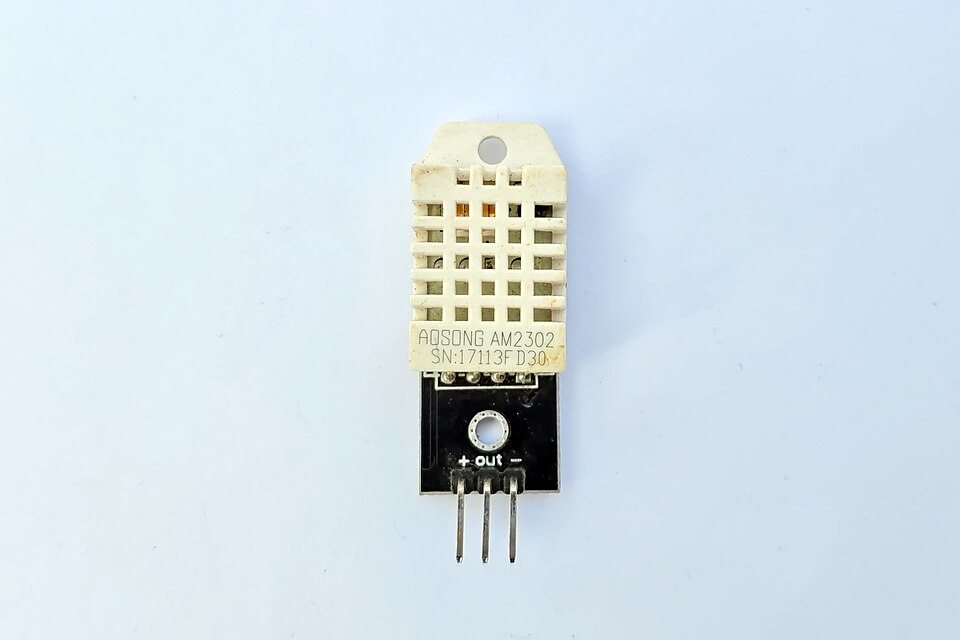
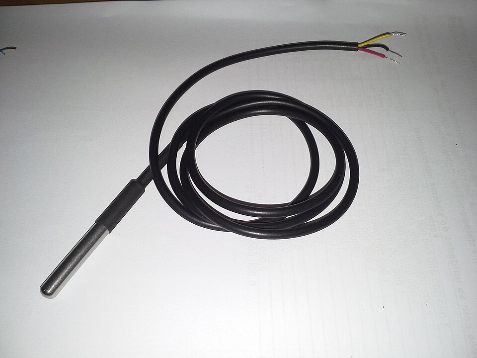
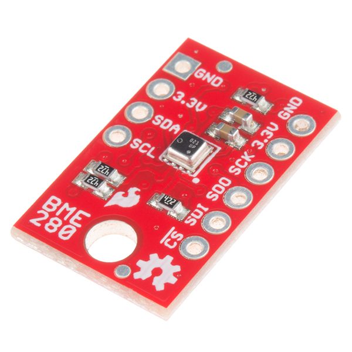
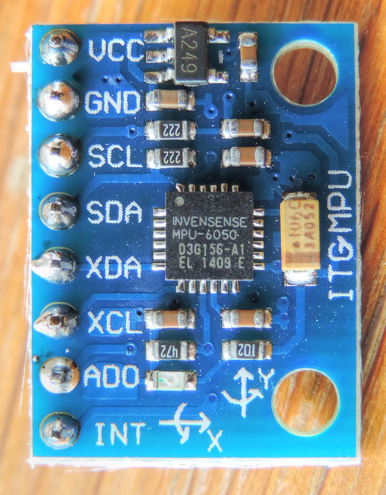

Aula 4 · Sistemas embarcados
Sensores: como o ESP32
sente o mundo
Luz, calor, gás, movimento, distância. Cada sensor traduz uma grandeza física em um sinal elétrico. Vamos abrir os sensores mais usados, ver como funcionam por dentro e como o ESP32 lê cada um.
Professor Doutor Roberto Cândido
→ ou espaço para avançar · G visão geral · F tela cheia
Introdução
O que é um sensor?
Um sensor é um tradutor: converte uma grandeza física (luz, temperatura, gás, distância) em um sinal elétrico que o microcontrolador consegue ler.
O ESP32 não enxerga, não sente calor nem cheiro. Os sensores são os sentidos dele:
o que existe no mundo: luz, calor, gás
muda algo elétrico: resistência, tensão, pulso
uma tensão no pino, ou um número enviado por fio
lê, converte em unidade, decide
acende, alarma, registra, envia pela rede
Introdução
Sensores estão em todo lugar
Casa
- Luz da garagem que acende sozinha (LDR)
- Alarme que percebe movimento (PIR)
- Detector de vazamento de gás (MQ-2)
- Sensor de porta aberta (reed + ímã)
Celular
- A tela gira quando o aparelho vira (acelerômetro)
- O brilho se ajusta ao ambiente (sensor de luz)
- A tela apaga encostada no ouvido (proximidade)
Carro
- Bipe do estacionamento (ultrassom)
- Temperatura do motor (NTC)
- Limpador que liga com a chuva (sensor óptico)
Agricultura
- Irrigação quando o solo seca (umidade do solo)
- Estufa com temperatura e umidade do ar (DHT22)
- Nível da caixa d’água (ultrassom, boia)
Indústria
- Temperatura de fornos e câmaras frias (DS18B20, Pt100)
- Vibração de motores para prever falhas (acelerômetro)
- Gases perigosos no ambiente
Saúde
- Termômetro digital de febre (NTC)
- Pulseira que conta passos (acelerômetro)
- Oxímetro de dedo (LED + fotodetector)
Entradas do ESP32
Analógico × digital
Analógico · como um dimmer
Pode assumir qualquer valor entre o mínimo e o máximo. A tensão no pino “desliza” junto com a grandeza.
LDR, NTC, potenciômetro, sensor de gás · analogRead() → 0 a 4095Digital · como um interruptor
Só dois estados: ligado ou desligado. O sensor já decidiu se “tem” ou “não tem”.
botão, reed, PIR, saída DO dos módulos · digitalRead() → 0 ou 1Digital com protocolo · o número pronto
Alguns sensores têm um pequeno chip dentro: eles mesmos medem e mandam o número pelo fio, em bits.
DHT22, DS18B20, BME280, MPU6050 · bibliotecaO digital só conta se a grandeza está acima ou abaixo do limiar. O analógico conta quanto.
Entradas do ESP32
ADC: de tensão para número
O ADC (conversor analógico-digital) funciona como uma régua: compara a tensão do pino com uma escala de degraus e devolve o número do degrau.
| Resolução | Degraus | Cada degrau (3,3 V) |
|---|---|---|
| 3 bits | 8 | ≈ 412 mV |
| 10 bits · Uno | 1.024 | ≈ 4,9 mV (em 5 V) |
| 12 bits · ESP32 | 4.096 | ≈ 0,8 mV |
- 0 V no pino → leitura 0; 3,3 V → 4095.
- Mais bits = régua com mais marcas = mais detalhe.
- Tudo que fica entre duas marcas vira o mesmo número: o sensor pode mudar um pouco sem a leitura mudar.
– de 0 a
Entradas do ESP32
O ADC do ESP32 na prática
| Bloco | Pinos | Cuidado |
|---|---|---|
| ADC1 | GPIO 32, 33, 34, 35, 36 (VP), 39 (VN) | use estes: funcionam com Wi‑Fi |
| ADC2 | GPIO 0, 2, 4, 12–15, 25–27 | não leem com o Wi‑Fi ligado; 0, 2, 12 e 15 atrapalham o boot |
A régua não é perfeita
Com a configuração padrão (atenuação de 11 dB), o ADC do ESP32 é confiável entre ~0,15 V e ~2,45 V. Abaixo disso lê 0; acima, os números ficam “espremidos” até travar em 4095 por volta de 3,1 V.
const int PINO = 34; // ADC1 · pinos 34 a 39 são só entrada
void setup() {
analogSetPinAttenuation(PINO, ADC_11db); // faixa ~0,15–2,45 V
}
void loop() {
int bruto = analogRead(PINO); // 0 .. 4095
int mv = analogReadMilliVolts(PINO); // mV, já corrigido
Serial.printf("bruto=%d %d mV\n", bruto, mv);
delay(500);
}
- Prefira
analogReadMilliVolts(): ela usa a calibração gravada de fábrica em cada chip. - A leitura oscila ±10 a 20 números. Tire a média de várias leituras e ponha um capacitor de 100 nF entre o pino e o GND.
- Projete o circuito para o sinal do sensor ficar dentro da faixa confiável.
Entradas do ESP32
Sensor que muda de resistência
V = 3,3 · Rfixo / (Rsensor + Rfixo)
Muitos sensores (LDR, NTC, gás) não geram tensão: eles mudam de resistência. Mas o ESP32 só mede tensão. O truque é o divisor de tensão.
- O sensor fica em série com um resistor fixo, entre 3,3 V e GND.
- A tensão de 3,3 V se divide entre os dois, na proporção das resistências.
- Quando a resistência do sensor muda, a tensão no ponto do meio muda junto. Esse ponto vai para o pino do ADC.
Como dois canos em série: o mais “apertado” fica com a maior parte da pressão.
- Escolha o R fixo perto da resistência do sensor no meio da faixa que interessa. É onde a leitura varia mais.
- Alimente com 3,3 V: assim a tensão nunca passa do que o pino aguenta.
- Trocar sensor e resistor de lugar inverte o sentido da leitura.
Peer Instruction · Pergunta 1 de 3
O LDR parou com o Wi‑Fi
Um protótipo lê um LDR no GPIO 4 e funciona há semanas. Para enviar os dados à nuvem, alguém acrescenta WiFi.begin(). A partir daí, analogRead(4) deixa de devolver leituras válidas. O que mudou?
O sinal de rádio do Wi‑Fi altera a resistência do LDR
O GPIO 4 pertence ao ADC2, que fica reservado para o Wi‑Fi
WiFi.begin() muda a resolução do ADC para 10 bits
O consumo do Wi‑Fi derruba a tensão de 3,3 V para perto de 0
1º voto individual → discuta com um colega → 2º voto
Sensores analógicos
LDR: o sensor de luz

- A trilha laranja em zigue-zague é de sulfeto de cádmio, um semicondutor.
- No escuro, ele tem poucos elétrons livres: resistência alta (~1 MΩ).
- A luz “arranca” elétrons dos átomos. Livres, eles conduzem corrente: resistência baixa (< 1 kΩ).
int luz = analogRead(34); // mais luz → número maior // dois limiares (histerese): a lâmpada não pisca no entardecer if (!noite && luz < 1500) noite = true; if ( noite && luz > 1800) noite = false; digitalWrite(LAMPADA, noite);
Sensores analógicos
Ponte de Wheatstone com LDR
São dois divisores lado a lado: um com o LDR, outro com um resistor de ajuste (potenciômetro). Em vez de olhar uma tensão sozinha, olhamos a diferença entre os dois pontos do meio.
Como uma balança de dois pratos: não importa quanto cada prato pesa, só para que lado ela pende.
- Equilíbrio: com RLDR = Rajuste, os dois lados têm a mesma tensão e a diferença é 0.
- A luz muda → o LDR muda → a ponte desequilibra para um lado ou para o outro.
- Se a fonte oscilar, os dois lados oscilam juntos e a diferença quase não muda.
Gire o potenciômetro até Vd ≈ 0 e ligue a oscilação da fonte: VA oscila, Vd quase não. Depois mude a luz.
Sensores analógicos
Termistores: NTC e PTC

Um termistor é um resistor cuja resistência muda bastante com a temperatura. Barato, pequeno e muito usado.
NTC · esquentou, R cai
Feito de óxidos semicondutores. Muito sensível. É o mais comum para medir: 10 kΩ a 25 °C.
PTC · esquentou, R sobe
Metal (Pt100, Pt1000): quase linear e estável, usado na indústria. Cerâmico: salta de resistência de repente, usado como fusível rearmável.
Sensores analógicos
Lendo um NTC no ESP32
NTC de 10 kΩ em cima, resistor de 10 kΩ embaixo. O que o ESP32 vê:
| Temperatura | R do NTC | Tensão | analogRead |
|---|---|---|---|
| 0 °C | 33,6 kΩ | 0,76 V | ~940 |
| 25 °C | 10,0 kΩ | 1,65 V | ~2050 |
| 50 °C | 3,6 kΩ | 2,43 V | ~3010 |
| 100 °C | 0,7 kΩ | 3,08 V | fora da faixa confiável |
- A relação não é uma reta: de 0 a 25 °C a leitura sobe ~1100; de 25 a 50 °C, ~960. Por isso usamos uma fórmula, não uma regra de três.
- Para medir perto de 100 °C, troque o resistor fixo por um menor (2,2 kΩ): a tensão volta para a faixa confiável.
const float R_FIXO = 10000, R25 = 10000, BETA = 3950;
float lerTemperatura() {
float v = analogReadMilliVolts(34) / 1000.0; // volts
if (v < 0.15 || v > 2.45) return NAN; // fora da faixa
float r = R_FIXO * (3.3 - v) / v; // resistência do NTC
// equação Beta: resistência → temperatura (kelvin)
float invT = 1.0 / 298.15 + log(r / R25) / BETA;
return 1.0 / invT - 273.15; // °C
}
BETA (3950) vem do datasheet do NTC: diz o quanto ele é sensível.
Sensores analógicos
Sensor de gás (série MQ)
Por fora, um cilindro com tela de metal. Por dentro, uma camada de óxido de estanho e um pequeno aquecedor.
- O aquecedor deixa a camada bem quente (centenas de graus).
- No ar limpo, o oxigênio gruda na superfície e “prende” elétrons: resistência alta.
- Um gás como GLP, metano, álcool ou fumaça reage com esse oxigênio e devolve os elétrons: resistência cai.
- O módulo transforma isso em tensão: saída AO (analógica) e DO (liga acima de um limiar ajustável).
| Modelo | Detecta | Uso típico |
|---|---|---|
| MQ-2 | GLP, propano, fumaça | vazamento de gás de cozinha |
| MQ-3 | álcool | bafômetro de protótipo |
| MQ-7 | monóxido de carbono | garagem, aquecedor a gás |
| MQ-135 | amônia, benzeno, fumaça | qualidade do ar |
Vermelho: oxigênio preso na superfície. Verde: moléculas de gás. Azul: elétrons livres na camada. Teste também com o aquecedor desligado.
Peer Instruction · Pergunta 2 de 3
O alarme que dispara ao ligar
Um detector com MQ-2 funciona bem durante o dia. Mas, toda vez que a placa é ligada, o alarme dispara por alguns minutos, sem nenhum gás no ambiente, e depois para sozinho. Qual a explicação mais provável?
O sensor está com defeito e precisa ser trocado
A camada ainda está esquentando, e a leitura só fica estável depois do aquecimento
O Wi‑Fi se conectando atrapalha a leitura do ADC1
Ao ligar, o ar da sala ainda tem resto de gás da véspera
1º voto individual → discuta com um colega → 2º voto
Sensores analógicos · monitoramento automatizado
De leitura a alarme confiável
Um simples if (ppm > LIMITE) dispara ao ligar e fica ligando e desligando perto do limite. Três regras resolvem:
- Aquecimento: ignore as leituras até o sensor estabilizar.
- Confirmação: só alarme se ficar acima do limite por alguns segundos seguidos.
- Histerese: liga em 1000 ppm, desliga só abaixo de 600 ppm.
void avaliar(float ppm, unsigned long agora) {
if (agora - tBoot < AQUECIMENTO) return;
if (ppm < LIGA) tAcima = agora; // zera
if (!alarme && agora - tAcima >= 3000)
alarme = true; // 3 s acima
if (alarme && ppm <= DESLIGA)
alarme = false; // histerese
}
Em cada modo: religue a placa e depois provoque um vazamento pequeno, que fica perto do limite. Conte os acionamentos.
Sensores analógicos
Outros sensores analógicos comuns
Potenciômetro
Uma trilha resistiva com um contato que desliza ao girar o eixo. Já é um divisor de tensão pronto: o pino do meio vai de 0 a 3,3 V.

LM35 · temperatura
Um chip que entrega 10 mV por °C: 25 °C = 250 mV. Linear, sem divisor e sem fórmula. Alimentado em 5 V, a saída não passa de 1,5 V: segura para o ESP32.
Umidade do solo
Duas hastes enterradas. Água conduz eletricidade: solo molhado → resistência menor → tensão maior. A versão capacitiva não corrói e dura mais.
Microfone
Uma membrana fina vibra com o som e muda a carga de um pequeno capacitor. O módulo amplifica: a saída oscila no ritmo do som.
Sensores digitais
Sensores liga/desliga
O sensor funciona como uma chave: o pino fica em HIGH ou LOW. Basta digitalRead().
- Botão e fim de curso: a mecânica fecha o contato (portão que chegou ao fim).
- Boia de nível: um ímã dentro da boia sobe com a água e fecha um contato.
- Reed switch: duas lâminas de metal dentro de uma ampola de vidro. Um ímã por perto as atrai e elas se encostam.

void setup() {
pinMode(PORTA, INPUT_PULLUP); // sem ímã: HIGH
}
void loop() {
bool fechada = digitalRead(PORTA) == LOW;
}
O INPUT_PULLUP mantém o pino em HIGH quando a chave está aberta; ao fechar, ela liga o pino ao GND e a leitura vira LOW. Sem pull-up, o pino aberto flutua.
Sensores digitais
PIR: o sensor de “presença”
- Todo corpo quente emite infravermelho: calor invisível.
- Dentro do PIR há um elemento piroelétrico com duas metades. Ele gera sinal quando o calor que recebe muda, não quando o calor é constante.
- A cúpula branca é uma lente de Fresnel: divide a sala em várias faixas. Quem anda passa de uma faixa para outra e provoca mudanças seguidas.
- O módulo (HC-SR501) já decide: a saída OUT fica em HIGH por alguns segundos, ajustáveis no potenciômetro.
Sensores digitais
Ultrassom: medindo distância pelo eco

- O ESP32 dá um pulso de 10 µs no pino TRIG.
- O emissor solta um “bip” de 40 kHz, agudo demais para ouvirmos. É como um morcego.
- O som bate no objeto e volta. Enquanto ele está a caminho, o pino ECHO fica em HIGH.
- Distância = tempo × velocidade do som (343 m/s) ÷ 2, porque o som vai e volta.
digitalWrite(TRIG, HIGH); delayMicroseconds(10); digitalWrite(TRIG, LOW); long us = pulseIn(ECHO, HIGH, 30000); // espera no máx. 30 ms float cm = us * 0.0343 / 2; // ida e volta
O HC-SR04 trabalha em 5 V e o ECHO sai com 5 V: use um divisor antes do ESP32, ou a versão 3,3 V (HC-SR04P). Tecidos e espumas absorvem o som e “somem”.
Sensores digitais
Sensores que mandam o número pronto
Dentro deles há o elemento sensor e um pequeno chip que mede, corrige e envia o resultado em bits. O ESP32 não usa o ADC: uma biblioteca conversa com o sensor.

DHT11 / DHT22
Temperatura e umidade. Dentro: um material que absorve água do ar e muda sua capacitância, e um NTC. Envia tudo por 1 fio.

DS18B20
Temperatura com ±0,5 °C. Versão com ponta de inox à prova d’água. Vários sensores podem dividir o mesmo fio (1-Wire).

BME280
Temperatura, umidade e pressão em um chip de 2,5 mm. A pressão do ar indica o tempo e a altitude. Fala por I²C.

MPU6050
Aceleração e giro. Dentro há uma massa microscópica presa por “molas”. Ao mover a placa, ela se desloca e muda uma capacitância. Fala por I²C.
Sensores digitais
Lendo com uma biblioteca
DHT22 · temperatura e umidade
#include <DHT.h>
DHT dht(4, DHT22); // dados no GPIO 4
void setup() { dht.begin(); }
void loop() {
float t = dht.readTemperature();
float u = dht.readHumidity();
if (isnan(t) || isnan(u)) Serial.println("falha");
else Serial.printf("%.1f C %.0f %%\n", t, u);
delay(2000); // DHT22: 1 leitura a cada 2 s
}
isnan(): a biblioteca devolve NaN (“não é um número”) quando o sensor não responde.
DS18B20 · temperatura
#include <OneWire.h>
#include <DallasTemperature.h>
OneWire fio(15); // + resistor 4,7 kΩ ao 3,3 V
DallasTemperature sensor(&fio);
void loop() {
sensor.requestTemperatures(); // até 750 ms para medir
float t = sensor.getTempCByIndex(0);
if (t == DEVICE_DISCONNECTED_C) Serial.println("sem sensor");
}
Se o sensor não responde, a leitura é −127. Um 85 logo ao ligar é o valor de fábrica, lido cedo demais.
Resistor de pull-up
O fio de dados precisa de um resistor ao 3,3 V (4,7 a 10 kΩ). Muitos módulos já trazem.
Tempo de leitura
Sensor digital leva de milissegundos a quase 1 s para medir. Respeite o intervalo mínimo do datasheet.
Valores de erro
NaN, −127, 85: o programa deve reconhecer cada um e não usá-los como temperatura.
Resumo dos sensores
Mapa dos sensores mais usados
| Quero medir | Sensor | Saída | Como o ESP32 lê | Exemplo de uso |
|---|---|---|---|---|
| luz | LDR · BH1750 | analógica · I²C | divisor + analogRead · biblioteca | luz automática · medidor de lux |
| temperatura | NTC · LM35 · DS18B20 | analógica · analógica · 1-Wire | divisor + fórmula · mV ÷ 10 · biblioteca | geladeira, estufa, câmara fria |
| temp. + umidade | DHT22 · BME280 | 1 fio · I²C | biblioteca | estação meteorológica |
| gás e fumaça | MQ-2, MQ-7, MQ-135 | analógica (AO) + liga/desliga (DO) | divisor 5 V → 3,3 V + analogRead | vazamento de gás |
| movimento | PIR HC-SR501 | liga/desliga | digitalRead ou interrupção | alarme, luz de corredor |
| distância | HC-SR04 | pulso (duração) | pulseIn | estacionamento, nível de tanque |
| porta aberta | reed + ímã | liga/desliga | INPUT_PULLUP + digitalRead | alarme de janela |
| umidade do solo | capacitivo | analógica | analogRead | irrigação automática |
| inclinação, vibração | MPU6050 | I²C | biblioteca | equilíbrio de robô, passos |
Requisitos não funcionais
Requisitos não funcionais (RNF)
“Medir a temperatura da câmara fria e alarmar acima de 8 °C.”
Com que exatidão? Em quanto tempo? Por quanto tempo na bateria? A que custo?
Ao comprar um celular, “fazer ligações” é funcional. Bateria de 2 dias, tela legível ao sol e preço até R$ 1.500 são não funcionais. Muitas vezes são eles que decidem a compra.
| Categoria | Exemplo para a câmara fria | Como verificar |
|---|---|---|
| exatidão | erro de no máximo ±0,5 °C entre −5 e 15 °C | comparar com um termômetro de referência |
| tempo de resposta | alarme em até 2 min depois de passar de 8 °C | aquecer o sensor e cronometrar |
| robustez | sensor desconectado é avisado em até 5 s | soltar o fio com o sistema rodando |
| autonomia | pelo menos 6 meses com uma bateria 18650 | medir a corrente média e calcular |
| custo | componentes até R$ 120 por unidade | lista de materiais |
| segurança | nenhum pino do ESP32 recebe mais de 3,3 V | revisar o esquema, medir com multímetro |
Requisitos não funcionais
RNF em conflito: rapidez × bateria
Os requisitos puxam para lados opostos. Ler mais vezes avisa mais rápido, mas gasta mais bateria. Projetar é achar uma configuração que atenda a todos.
- Entre uma leitura e outra, o ESP32 pode dormir (deep sleep) gastando quase nada.
- Ligar o Wi‑Fi é o que mais consome. Enviar só quando precisa economiza muito.
- A placa e o sensor também contam: alguns gastam muito mesmo parados.
void setup() { // roda a cada despertar
float t = lerTemperatura();
if (t > LIMITE || horaDoLote())
enviarWiFi(t); // rádio só quando precisa
else guardarNaRTC(t);
esp_sleep_enable_timer_wakeup(
60 * 1000000ULL); // acorda em 60 s
esp_deep_sleep_start(); // dorme
}
Valores aproximados, para comparar escolhas. Meça a corrente real da sua placa.
Peer Instruction · Pergunta 3 de 3
Qual requisito dá para testar?
A equipe escreveu requisitos para o detector de gás de uma cozinha. Qual deles é um requisito não funcional verificável?
“O sistema deve detectar vazamentos de gás rapidamente.”
“O sistema deve ser preciso e confiável.”
“Com GLP a 1.000 ppm, o alarme sonoro dispara em até 10 s, depois de 5 min de aquecimento.”
“O sistema deve usar o sensor MQ-2.”
1º voto individual → discuta com um colega → 2º voto
Síntese
O que levar desta aula
Entradas
- Analógico = quanto; digital = sim ou não
- O ADC do ESP32 é uma régua de 0 a 4095
- Sensor analógico no ADC1 (GPIO 32–39) se houver Wi‑Fi
- Nunca mais de 3,3 V no pino
Analógicos
- LDR, NTC e gás mudam de resistência: use divisor
- Ponte de Wheatstone compara com uma referência
- NTC: fórmula e calibração; gás: aquecimento
- Dois limiares (histerese) evitam o liga-desliga
Digitais
- Reed, PIR, botão:
digitalReadcom pull-up - PIR vê movimento, não presença
- Ultrassom mede o tempo do eco
- DHT22, DS18B20: biblioteca e valores de erro
Requisitos
- Funcional: o que faz; não funcional: quão bem
- Cada RNF com número e teste
- Rapidez × bateria se decide com números
- Primeiro os requisitos, depois o sensor